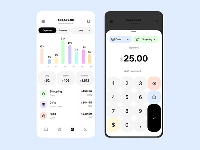
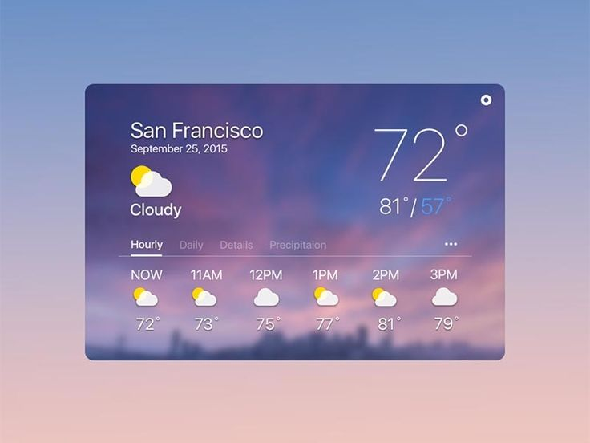

Projects

Personal Finance Tracker
Recipe Management System

Weather Dashboard
To-Do List with Notifications
I am a frontend developer
My name is Ivan Matić, I am 33 years old and I have been working as a frontend developer for 7 years. Throughout my career, I have gained deep understanding and skills needed for using all the tools related to frontend development, including HTML, CSS, JavaScript, and various frontend frameworks. I graduated from the Faculty of Informatics at Juraj Dobrila University of Pula, where I gained a solid foundation in computer science and programming. Besides my professional interest in technology, in my free time, I like to play video games, enjoy a good coffee, and visit museums. These activities help me relax and get inspired for new projects. I am always open to new challenges and opportunities to learn and look forward to collaborating with you on your future projects.
Personal Finance Tracker
Recipe Management System
Weather Dashboard
To-Do List with Notifications